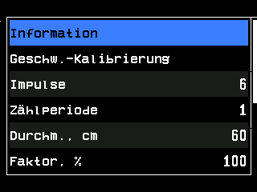

Sensoreinstellungen
Wie Sie die Einstellungen eines einzelnen Sensors des Hectare Mini erreichen, was jedes Kontextmenü enthält, welche Einstellungen für eine ganze Gruppe gelten und welche Kalibrierungen es gibt.
Jeder Sensor, jeder Motor und jeder Aktuator hat sein eigenes Kontextmenü: seinen Statusbildschirm, seine Parameter und bei manchen eine Kalibrierung. Die Parameter der einzelnen Sensorarten stehen in den Themen nach diesem.
Einen Sensor erreichen
Halten Sie auf dem Startbildschirm „MENU“ gedrückt, bis die Geschwindigkeitsanzeige einen weißen Hintergrund hat. Das Panel ist im Sensoreinstellmodus. Lassen Sie die Taste los.

Der Sensoreinstellmodus, der Geschwindigkeitssensor ist gewählt. Wählen Sie den Sensor mit „UP“ / „DOWN“. Ein gewählter Korn- oder Düngersensor zeigt seine Nummer unter der Säule auf weißem Hintergrund.
Drücken Sie „MENU“. Das Kontextmenü des gewählten Sensors öffnet sich.
Ändern Sie einen Wert mit „UP“ / „DOWN“ und „PLUS“ / „MINUS“, wie in jedem Menü. „BACK“ schließt das Kontextmenü; mit nochmals „BACK“ verlassen Sie den Sensoreinstellmodus.
Was das Kontextmenü enthält, hängt von der Sensorart, von der Maschine und von der Zugriffsebene ab. Ein Parameter, den Sie nicht sehen, liegt entweder über Ihrer Ebene oder trifft nicht zu – das Thema des jeweiligen Sensors sagt es.
Das Kontextmenü

- „Information“ – öffnet den Statusbildschirm dieses Sensors. Jedes Kontextmenü beginnt damit. Der Sensor-Statusbildschirm
- Eine Aktion dieser Sensorart – hier „Geschw.-Kalibrierung“. Ein Dosierersensor hat stattdessen „Dosierer-Kalibr.(Masse)“; Korn- und Düngersensoren haben „Produktausbringung“.
- Ein Parameter – hier „Impulse“ des Geschwindigkeitssensors.
- Sein Wert. Wählen Sie die Zeile; der Wert steht zwischen − und + und ändert sich mit „MINUS“ / „PLUS“.
- Bildlaufleiste. Weitere Parameter folgen; der letzte Punkt ist „Standardwerte“.
„Standardwerte“ setzt die Parameter dieses Sensors auf die Werkswerte zurück. Dafür ist die Ebene „Service“ nötig, und es wirkt sofort, ohne Rückfrage.
Das Kontextmenü, das Sie vom Statusbildschirm mit „MENU“ erreichen, hat als ersten Punkt statt „Information“ den Punkt „Überwachung aus“ oder „Überwachung ein“ – siehe Sensor in die Überwachung nehmen oder herausnehmen.
Ein Satz für eine Gruppe oder je einer pro Sensor
| Sensoren | Einstellungen |
|---|---|
| Kornsensoren | Ein Satz für alle. Ändern Sie ihn an einem beliebigen Kornsensor – er gilt für alle. Nur „Produktausbringung“ wird je Saatleitung eingestellt. |
| Düngersensoren | Ein Satz für alle Düngersensoren, getrennt von den Kornsensoren. „Produktausbringung“ je Leitung. |
| Alle anderen Sensoren | Jeder Sensor hat eigene Einstellungen – stellen Sie jeden Dosierer-, Gebläse- oder Drucksensor einzeln ein. |
Kalibrierungen
| Was sie richtigstellt | Wo | Ebene | Maschine |
|---|---|---|---|
| Fahrgeschwindigkeit – „Faktor, %“ des Geschwindigkeitssensors, über 100 m. Geschwindigkeitssensor kalibrieren | „Sämaschinen-Parameter“ → „Geschw.-Kalibrierung“, oder das Kontextmenü des Geschwindigkeitssensors | Agronom; aus dem Kontextmenü auch Fahrer mit PIN | fährt 100 m |
| Dosierer-Drehung – „Rad, Impulse“ gegenüber „Dosierer Impulse“. Dosierer-Drehung kalibrieren | „Sämaschinen-Parameter“ → „Dosierer-Kalibrierung“ | Agronom | Antriebsrad gedreht |
| Dosierer nach Gewicht – „Masse, g“ und „Masse, Impulse“. Dosierer nach Gewicht kalibrieren | Kontextmenü des Dosierersensors → „Dosierer-Kalibr.(Masse)“ | Fahrer | steht |
| Dosierermotor nach Gewicht. Motor nach Gewicht kalibrieren | Kontextmenü des Motors | Fahrer | steht |
Die beiden Gewichtskalibrierungen liegen auf der Ebene „Fahrer“, weil sie bei jedem Produktwechsel wiederholt werden müssen.
Die Sensorarten
Geschwindigkeitssensor · Korn- und Düngersensoren · Dosierersensor · Gebläsesensor · Drucksensor · Behälter- und Arbeitsstellungssensoren · Motorsensoren · Spuranzeiger-Sensoren · Dosierermotoren
Ihre Maschine tut etwas, das diese Seite nicht beantwortet? Schreiben Sie an support@agriwelt.com — es antwortet ein Ingenieur.